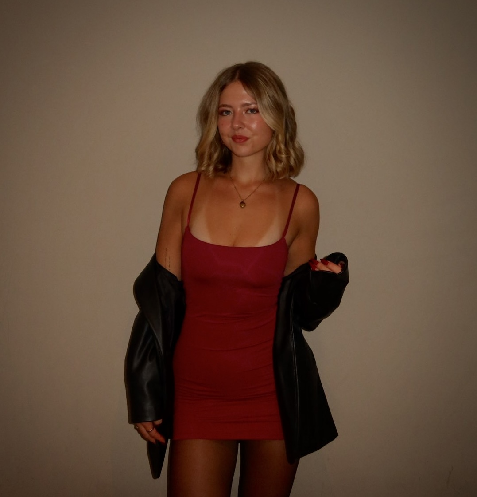
DREAM
PLAN
DO
REPEAT
❤︎
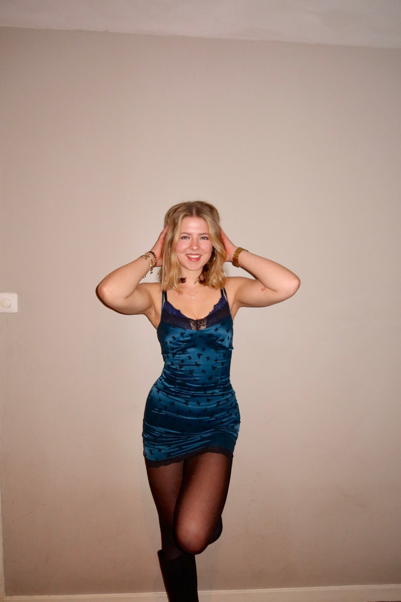
ABOUT ME
I am Zoe Bossina, and I live in Harkstede, near Groningen. I am studying Communication & Multimedia Design.
I am a creative, sociable, and enthusiastic person. I love sports, fashion, photography, traveling, and discovering new things.
My goal is to combine creativity with my own style and ideas.
❍ 21 years
📍 Harkstede/groningen
🎓 HBO Communication & Multimedia Design
💭 creative, social, eager to learn
THINGS THAT MAKE ME HAPPY
⚽︎
SPORT
🛍️
SHOPPING
LOVE
🎵
MUSIC
🐾
DOGS
💅🏻
FRIENDS
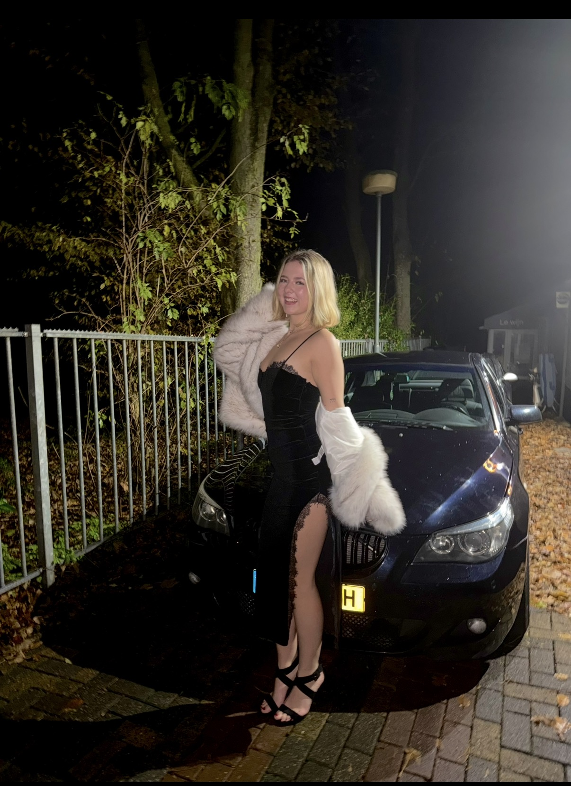
MY
VIBE
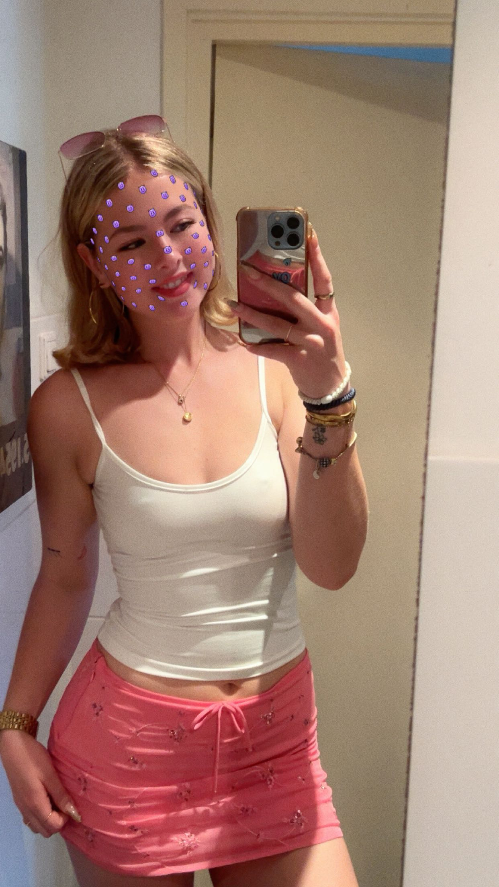
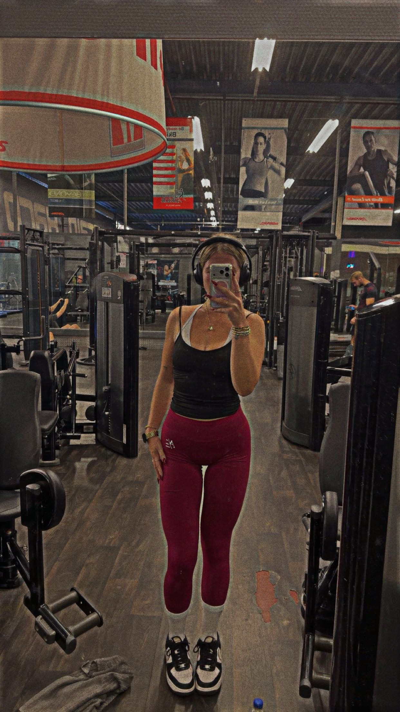
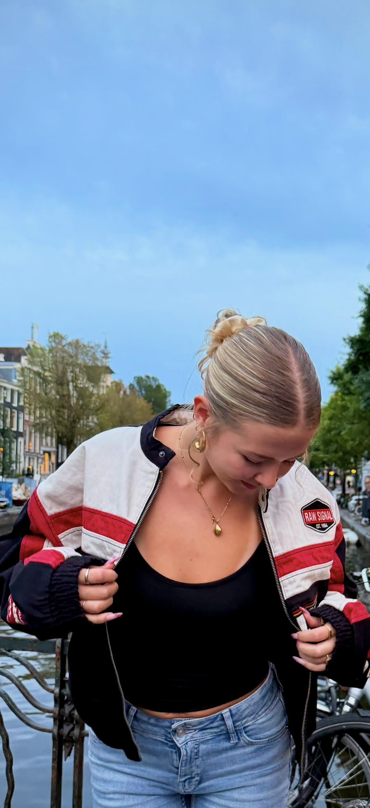
A LITTLE GLIMPSE INTO MY WORLD
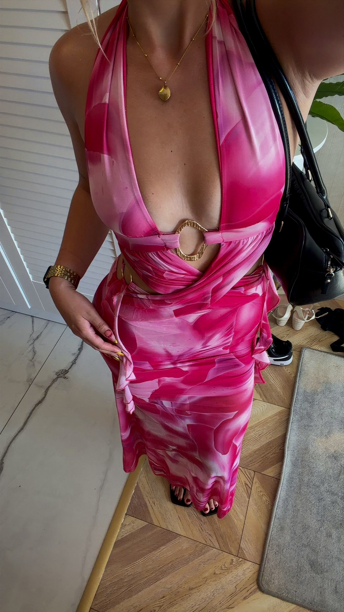
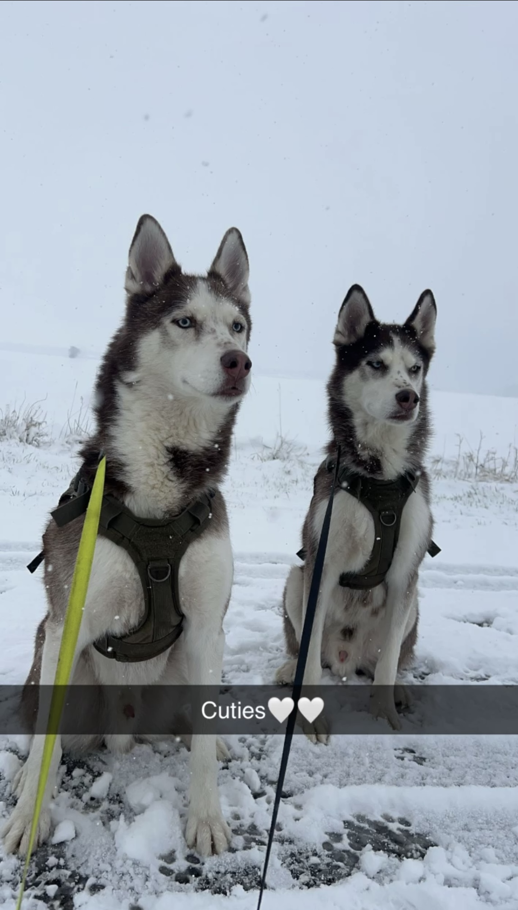
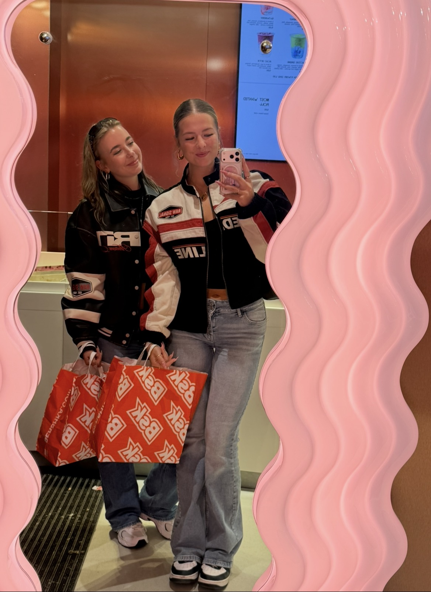
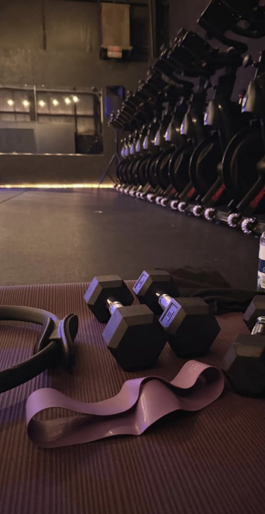
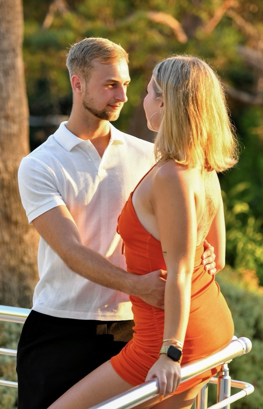
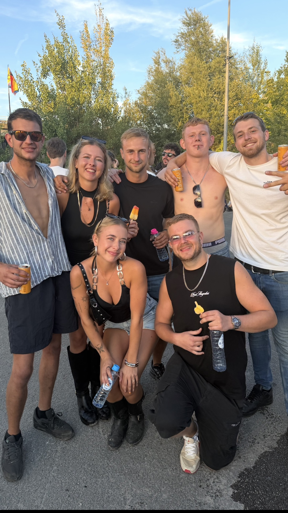
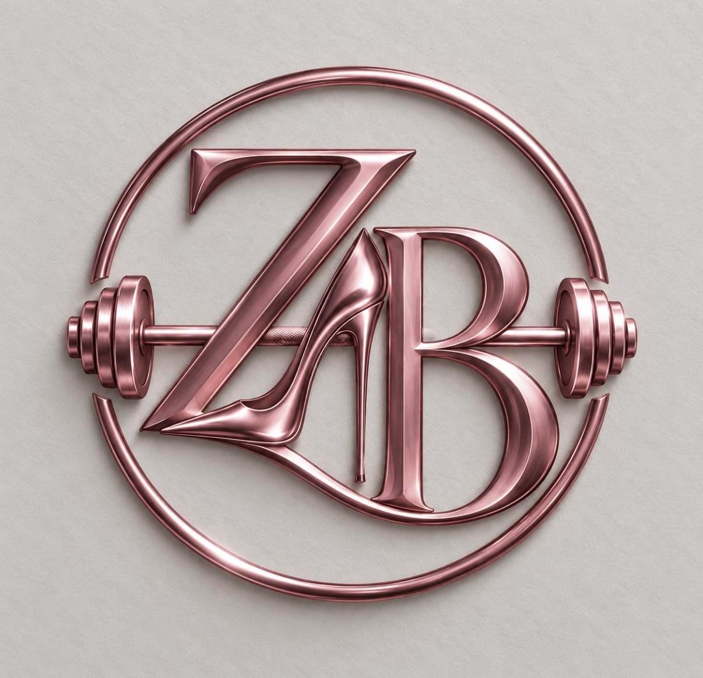
01 Web Design
02 Branding
03 Visual Design
04 Content